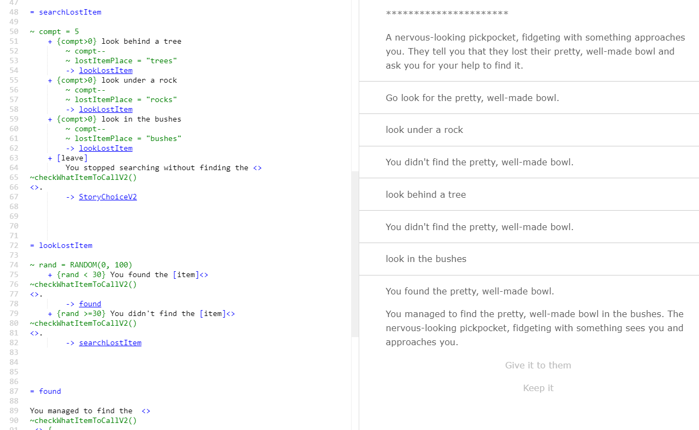

Storylets game
This game is a choice-based narrative game made using Ink.
The game is set in a medieval setting and the player is presented with storylets, story bits that are chosen randomly with prerequisites. The characters and items encountered are also chosen randomly from a list of possibilities.
There are four factions in the game: the peasants, the guards, the nobles and the thieves. Each situation offers players a way to modify their reputation with one or more of these factions and their reputation scores will determine what storylets they might encounter as well as the ending they will get.
As the game starts, a function determines what level of details the descriptions of character, places or items will have. There are four levels, one without any details, only describing things as "an item" or "a place" and the other one adding adjectives and more specificity.
This was made in order to study the difference in the immersion felt by players who played the game with different levels of details.
The game is playable here: https://pokep.itch.io/storyletsgame
![An example of text from the game: A talkative knight in a beautiful armour approaches you, telling you that they are looking for a pale robber wearing dirty clothes. They tell you that the criminal is nearby and asks you to keep an eye open.
A bit further away, you notice the pale robber wearing dirty clothes, hiding behind a dirty, messy and very big haystack. They see that you have found them. They whisper, asking you not to say anything.
Four choices are available: ask the thief why the guard is looking for them, tell the guard, don't say anything, or help the thief](../Media/StoryletsGame1.png "Example of text from the game")
